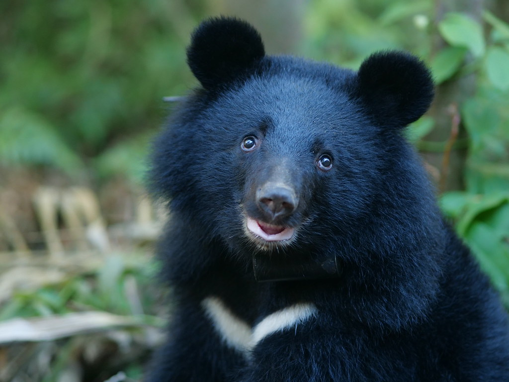
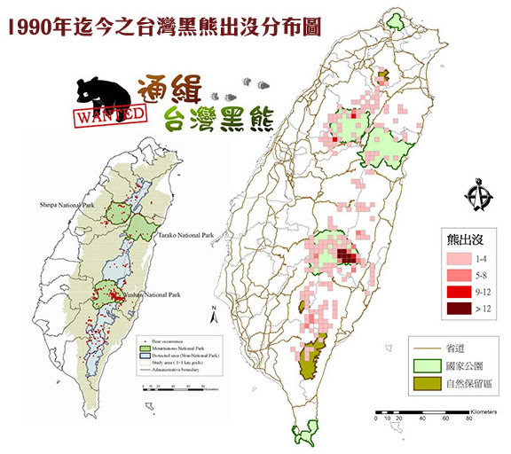
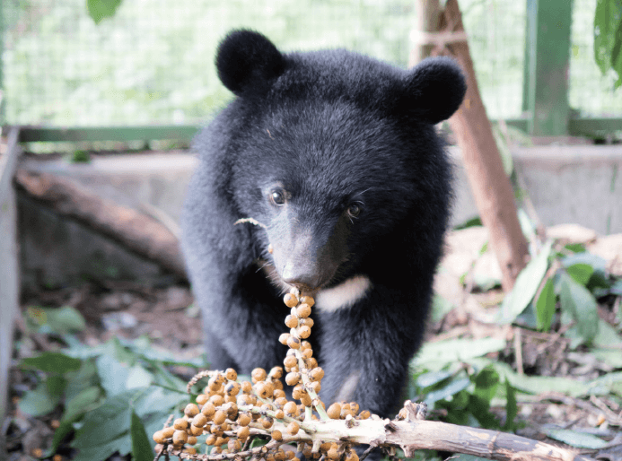
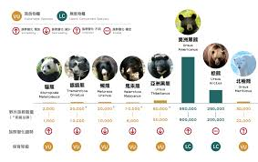

概觀
台灣黑熊（學名：Ursus thibetanus formosanus）是台灣特有亞種，屬於熊科動物，是台灣的保育類野生動物。
牠們是中型熊類，體型比一般黑熊稍小，通常體長約 120-180 公分，體重則約 60-160 公斤。
棲息地
台灣黑熊主要分佈於台灣島的山區，特別是中高海拔地區，如中央山脈、雪山山脈等地方。
行為特徵
台灣黑熊是一種夜行性動物，主要在夜間活動，白天則會躲在山中的樹洞或者岩洞休息。
牠們以植物性食物為主，包括果實、樹皮、葉子等，偶爾也會吃些昆蟲、小型哺乳動物等。
保育狀況
由於棲息地的破壞、人類活動的干擾以及非法獵捕等因素，台灣黑熊的數量逐漸減少，目前已被列為瀕臨絕種動物。
台灣政府和相關機構正在積極進行保育工作，包括棲息地保護、研究監測、教育宣傳等，以期保護這一珍貴的野生動物資源。